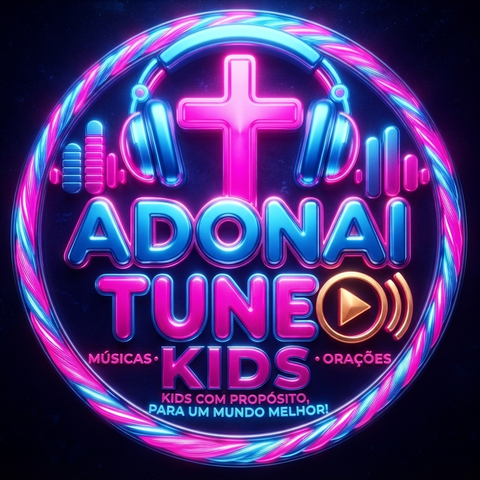

Adonai Shalom
Evangelismo, pregações, mensagens e projetos.
Um lugar para acompanhar o que Deus está fazendo e caminhar junto.
Publicações
Pregações, relatos, projetos e mensagens mais recentes.
Vídeos
Pregações, evangelismo e mensagens em vídeo, direto do nosso canal no YouTube.
Redes sociais do Adonai Shalom
Acompanhe as pregações, os projetos e o evangelismo no dia a dia.
Ouça a AdonaiTune
Rádio gospel 24 horas, com músicas, mensagens e orações.
ADONAITUNE
RÁDIO GOSPEL 24 HORAS
Mais que uma rádio, é um propósito!
Sobre a rádio
Bem-vindo à AdonaiTune, a rádio gospel que toca 24 horas por dia, todos os dias, para levar música, orações e mensagens que fortalecem a fé.
Nossa missão é simples: ser um espaço de louvor e adoração para jovens com propósito, num mundo que precisa de mais luz.
Playlist AdonaiTune
As músicas que tocam na programação da rádio.
Vídeos
Direto do nosso canal no YouTube. Toque no vídeo para ouvir e assistir aqui mesmo.
Notícias
Siga a AdonaiTune
Divulgue a rádio e receba os avisos da programação.
Conheça o Adonai Shalom
Evangelismo, pregações, mensagens e projetos.

ADONAITUNE KIDS
MÚSICAS • MENSAGENS • ORAÇÕES
Kids com propósito, para um mundo melhor!
Publicações Kids
Músicas, mensagens e atividades para a criançada.
Vídeos
Os vídeos da criançada, direto do nosso canal. Toque para assistir aqui mesmo.
Siga a AdonaiTune Kids
Acompanhe as novidades para a criançada.
Ouça a AdonaiTune
Rádio gospel 24 horas, com músicas, mensagens e orações.